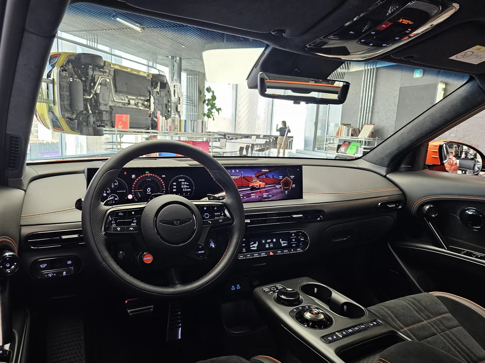

▲ GV60 마그마 실내. 스티어링 휠의 'MAGMA' 버튼을 누르면 트랙 전용 부스트 모드가 활성화된다 ⓒ Damian B Oh, Wikimedia Commons (CC BY-SA 4.0)
제네시스가 독일 뉘르부르크링에서 운영하는 '제네시스 트랙 택시 노르트슐라이페' 프로그램에 GV60 마그마가 새로 합류했습니다. 이 프로그램은 전문 드라이버가 차량을 몰고, 고객은 동승자로서 서킷 주행을 체험하는 유료 서비스입니다. 2024년부터 G70으로 운영해온 프로그램에 제네시스 최초의 순수전기 고성능 모델인 GV60 마그마가 새 라인업으로 추가된 것입니다.
| 구분 | 내용 |
|---|---|
| 파워트레인 | 듀얼모터 AWD |
| 합산 출력 | 650마력(478kW), 790Nm |
| 0-100km/h | 3.4초(부스트 모드) |
| 체험 요금 | 조수석 140유로, 뒷좌석 +40유로 |
1. GV60 마그마 제원 — 듀얼모터 650마력, 0-100km/h 3.4초

▲ 계기판에 주행거리·랩타임 등 트랙 주행 정보가 실시간으로 표시된다 ⓒ Damian B Oh, Wikimedia Commons (CC BY-SA 4.0)
GV60 마그마는 듀얼모터 사륜구동(AWD) 시스템을 갖췄으며, 각 모터가 2만rpm 이상까지 회전해 합산 출력 478kW(650마력), 최대토크 790Nm을 냅니다. '부스트' 모드를 활성화하면 정지 상태에서 시속 100km까지 3.4초 만에 도달합니다. 외관은 제네시스 마그마 레이싱팀의 르망 24시 스페셜 리버리에서 영감을 받은 디자인이 적용되고, 차체 상단에는 한글로 '마그마'가 각인돼 브랜드 정체성을 강조합니다.
2. 노르트슐라이페 체험 — 20.832km를 8~10분에

▲ 뉘르부르크링 노르트슐라이페는 20.832km, 70개 이상의 코너로 이뤄진 세계적인 서킷이다(사진은 일반 GV60) ⓒ 제네시스
뉘르부르크링 노르트슐라이페는 극심한 고저차와 70개 이상의 코너로 악명 높은 서킷입니다. 전문 드라이버가 운전하는 GV60 마그마 트랙택시에 탑승하면, 차량 1대당 최대 3명까지 20.832km 구간을 약 8~10분에 걸쳐 체험할 수 있습니다. 요금은 조수석 기준 140유로(약 22만원), 뒷좌석에 동승자를 추가하면 40유로(약 6만원)가 더해집니다. 이번 GV60 마그마 투입은 2026년 3월 뉴욕에서 처음 공개된 '마그마 프로그램'의 일환으로, 제네시스가 고성능 영역으로 브랜드를 확장하려는 전략의 연장선에 있습니다.